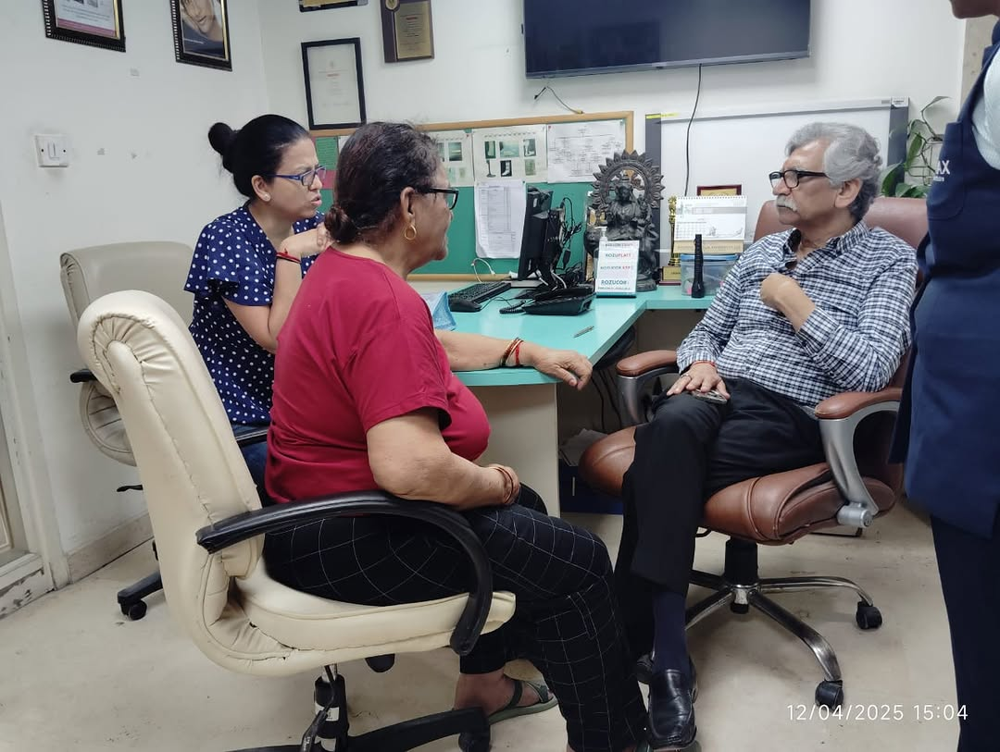
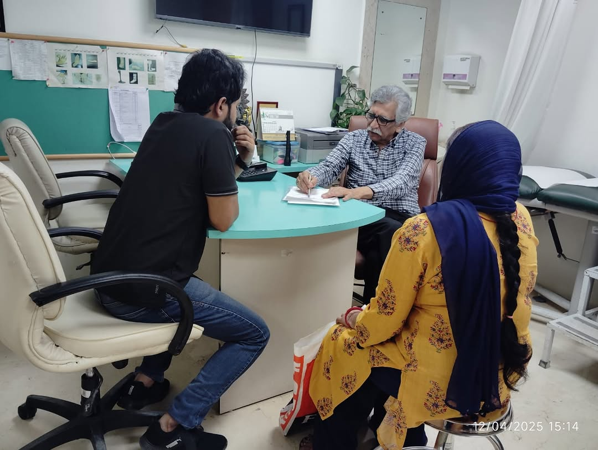
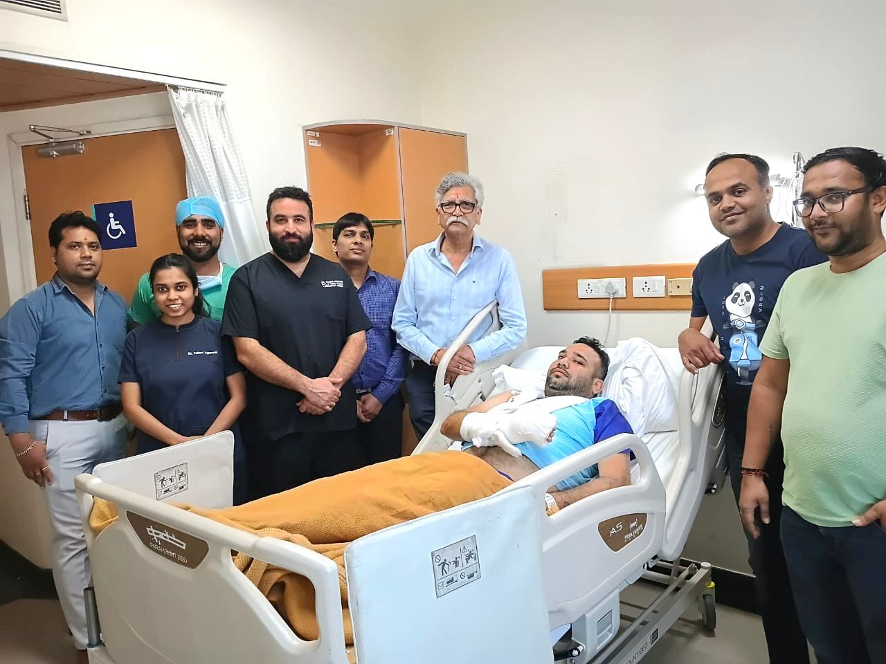
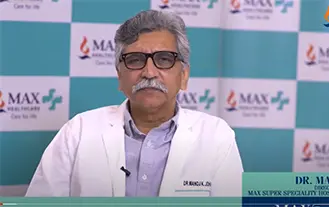
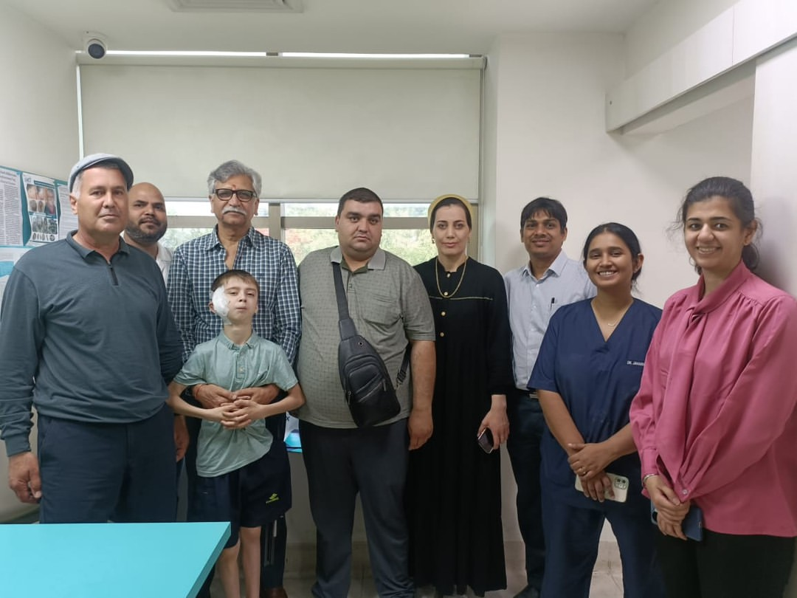
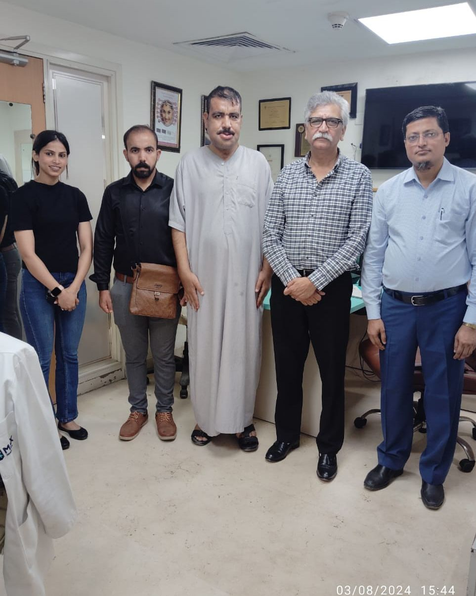
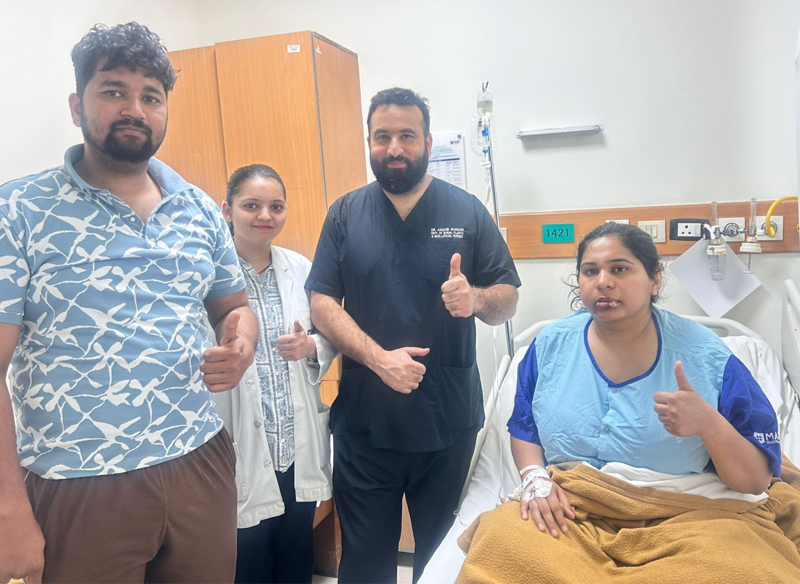
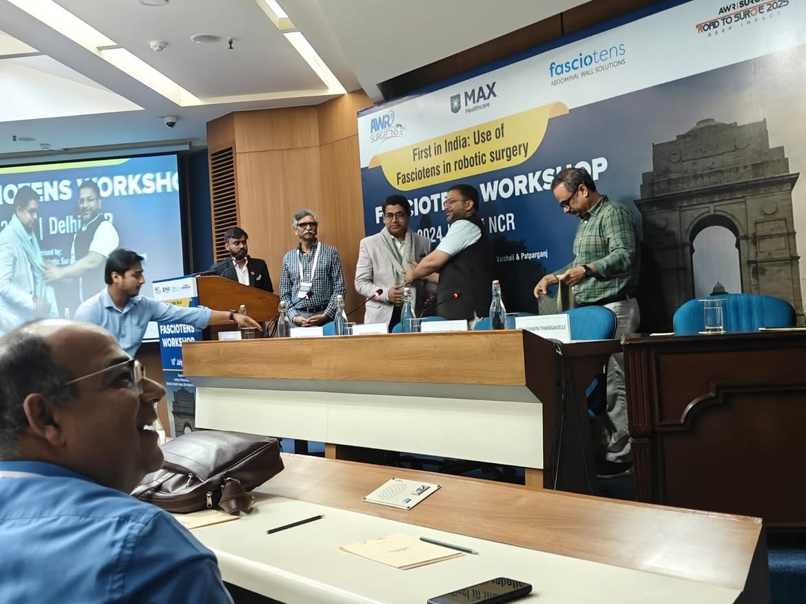

01

A real conversation.
Tell us what brings you here. We listen to your concerns, review your history and discuss your goals.
Your first visit
Expertise in plastic, aesthetic and reconstructive surgery. A thoughtful approach to the way you look, feel and live.
A complete spectrum
of specialist care.
Every person has a different starting point. Explore our areas of care, then let us help you understand your options.
View all treatments Refinement, with you at the centre.
Refinement, with you at the centre.Personalised surgical and non-surgical approaches, guided by your anatomy, your concerns and your expectations.
 Considered care. Individual planning.
Considered care. Individual planning.Thoughtfully planned procedures, with an honest conversation about your goals, the options and recovery.
Hair concerns deserve a detailed assessment. Our team helps you explore medical and surgical options.
 Restoring form. Supporting function.
Restoring form. Supporting function.Coordinated specialist care for conditions affecting form and function, with a treatment plan built around the individual.
Good care begins with understanding the person, not just the procedure.
Dr. Manoj K. Johar leads a team of plastic surgeons and allied specialists in aesthetic and reconstructive care. His approach brings together surgical precision, thoughtful planning and an honest conversation about what is right for you.
From your first question to your follow-up appointment, we want you to feel informed, supported and heard.

Tell us what brings you here. We listen to your concerns, review your history and discuss your goals.
Your first visit
Understand your options, expected recovery and costs. Make a decision with clear information and time to think.
Common questions
Receive preparation advice, aftercare instructions and follow-up support from your treatment team.
Aftercare guidanceDifferent areas of expertise. A shared commitment to individual care.
Meet the full teamVery polite and experienced doctor. Good staff. Detailed interaction regarding the problem and treatment, and full assistance till the completion of treatment. Highly recommended.


PEDIATRIC RECONSTRUCTIONAfter 11 years on a liquid diet due to a congenital TM joint defect, this brave young boy can finally eat normal meals following complex reconstructive surgery by Dr. Johar and his multidisciplinary team.
Max Healthcare · Department of Plastic Surgery
GLOBAL PATIENT CAREA heartfelt testimonial from an international patient who traveled from Iraq for specialist reconstructive and aesthetic surgery, receiving dedicated assistance through full clinical recovery.
International Patient Services · Kratam & Max
INPATIENT HEALINGWarm smiles and full clinical recovery with Dr. Aaquib Hussain and dedicated hospital nursing staff at Max Healthcare inpatient care following successful surgical reconstruction.
Max Inpatient Centre · Reconstructive RecoveryPersonal experiences shared by patients. Individual treatment outcomes vary.
Considering treatment comes with questions. We’re here to help you ask them.
All frequently asked questionsStart with a consultation. Our team will listen to your concerns, review your medical history and explain the options before you decide on any treatment.
Virtual consultations are available. Contact our team to arrange a video appointment and find out whether an in-person examination will also be needed.
Explore virtual consultationsYour specialist will discuss your goals, examine the area of concern and explain the benefits, limitations, risks and recovery of suitable options.
Bring relevant medical records, details of current medications and your questions. Our first-visit guide will help you prepare.
Read the first-visit guideConsult with our team at hospital centres across Noida and Delhi-NCR.

Surgical Excellence & Pioneering Robotic Surgery Advancements
Share your questions. Explore your options.
Take the next step at your own pace.